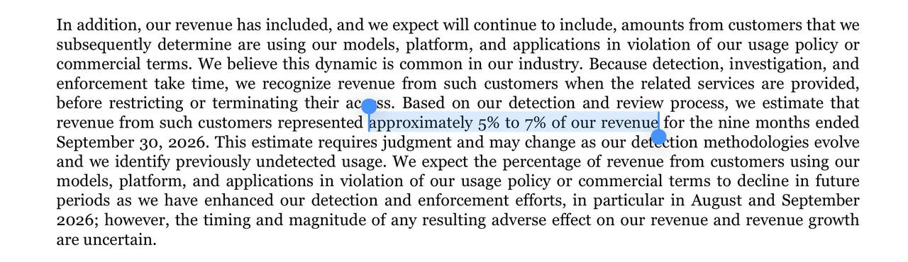
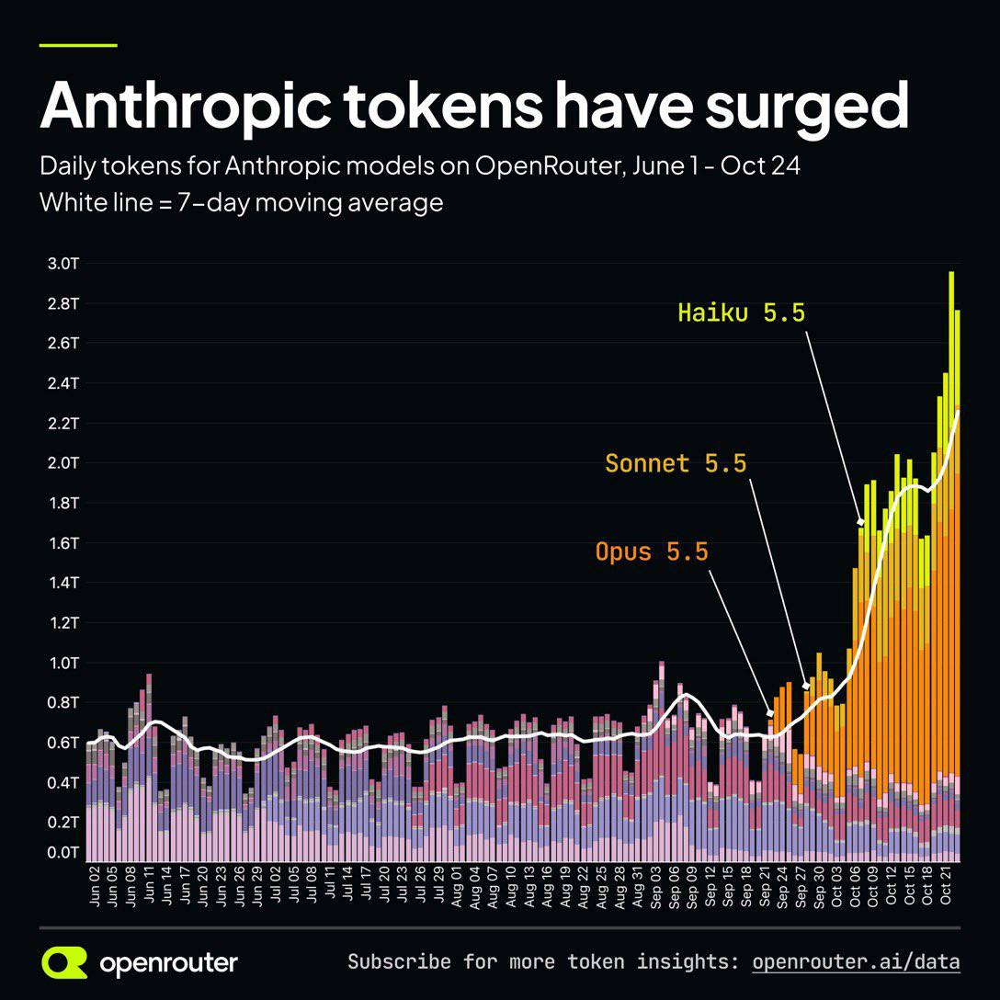
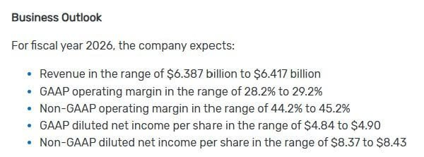

過去 26 小時共 5 則，兩個主題：一是 Anthropic 剛公開的 S-1（違規客戶營收佔 5–7%）加上 OpenRouter 的 Anthropic token 用量圖；二是 Cadence Q3 財報，以及 OpenAI Jalapeño 晶片用 AI 加速設計對 EDA 產業的意涵。另有一則影片／受限內容抓不到。
編號 6508，2026-10-27 08:16 台北，是影片或受限內容，腳本抓不到，請自行開 App 查看。
#6509：（無文字，僅圖片）

圖為英文招股文件截圖，反白句子：違反使用政策或商業條款的客戶所貢獻的營收，「約佔截至 2026 年 9 月 30 日九個月營收的 5% 到 7%」；文件並說 8、9 月已加強偵測與執法，預期此比例下降，但對營收與成長的影響時點與幅度不確定。
#6510：（無文字，僅圖片）

OpenRouter 圖表「Anthropic tokens have surged」：6/1–10/24 OpenRouter 上 Anthropic 模型每日 token 數。9 月下旬前 7 日均線約 0.6T；Opus 5.5、Sonnet 5.5、Haiku 5.5 陸續上線後衝高，10 月下旬均線約 2.2T、單日峰值近 3T。
講解
貼文沒有附文字，但截圖內容經查證來自 Anthropic 10/26 公開的 S-1（擬在 Nasdaq 上市，代號 ANT）。這段是風險揭露：有一部分客戶的使用違反 Anthropic 的使用政策或商業條款，但因為偵測、調查、處置需要時間，服務提供當下就已認列營收，事後才限制或停權。公司估計這類營收佔前九個月的 5–7%，而且明說這是需要判斷的估計，偵測方法改進後還可能上修。
對投資人的意義：這是一塊「會被主動砍掉」的營收。8、9 月加強執法後，未來季度的成長率會有一個逆風，文件自己也說影響幅度不確定。媒體報導沒有說明違規類型；S-1 另外把「模型蒸餾」（用 Claude 輸出訓練別家模型）列為競爭與國安風險，但目前沒有來源說這 5–7% 就是蒸餾，不宜直接畫上等號。據報 S-1 揭露 2026 上半年營收 163 億美元（Q1 47 億、Q2 116 億），規模基期已很大。
OpenRouter 圖則顯示 5.5 世代模型推出後用量約翻三倍多。要注意 OpenRouter 只是第三方路由平台、偏開發者與新創，不代表 Anthropic 整體（企業直連 API、雲端平台、Claude 訂閱都不在內），而且圖是 OpenRouter 自己的行銷素材。把兩張圖並排看，一邊是需求爆量，一邊是公司說要清掉違規用量，成長品質是 IPO 時市場會追問的點。
cadence q3
好奇的是 jalapeno rtl-tapeout 只花了九個月，對於整個晶片設計業到底影響如何？到底 AI 的加入是加速流程，還是整個構造改革，好像每個產業環節都會被健檢一輪，有些還因此腥風血雨
---
jalapeno 前端用的是 Google 開源的高階合成工具鏈 XLS，再用 DSLX/C++ 轉 Verilog。AI 主要用在「看起來像軟體」的工作上（quote IEEE Spectrum），實體設計和量產則是 Broadcom 負責- Devgan 說 20 年前做一顆 CPU 要 500 人、5 年，現在 50 人、6 個月就能完成，難度約降 100 倍，AI 還能再降 5-10 倍
- CFO 說客戶一向會在 Cadence 工具上建自己的流程，agent 做的設計探索比工程師多得多，會反覆呼叫底層工具，用量因此放大
- Devgan 認為模型路由、領域專用模型、代理和工具的深度整合，客戶很難自己辦到。而 OAI 辦到了阿？我想可能因為它是少數？
- Devgan 說目前設計活動是他看過最強的，範圍包括 AI、類比混訊、記憶體與系統公司
- 自研晶片擴散有利公司，3D-IC/chiplet 擴大驗證需求
- 授權模式轉向用量，agent 增加工具呼叫次數，計價會從工程師人頭往使用量移動
- EDA 兩大廠路線分開，Synopsys 和前沿模型商綁定，Cadence 走開源權重模型、自己後訓練
#6512：（無文字，僅圖片）

Cadence 2026 全年財測：營收 63.87–64.17 億美元、GAAP 營業利益率 28.2–29.2%、非 GAAP 44.2–45.2%、GAAP EPS 4.84–4.90 美元、非 GAAP EPS 8.37–8.43 美元。
講解
財報本身。Cadence（EDA 晶片設計軟體龍頭之一）10/26 公布 Q3：營收 16.33 億美元、年增約 22%；backlog 創新高 82 億美元，未來 12 個月可認列 42 億；非 GAAP EPS 2.11 美元。全年財測上調（圖中數字與官方新聞稿一致），營收中值約年增 21%，Devgan 說非 GAAP EPS 上調 0.30 美元到 8.40。要留意利益率下滑：Q3 非 GAAP 營業利益率 44.1%（去年 47.6%），GAAP 26.2%（去年 31.8%）。
Jalapeño 是什麼。OpenAI 與 Broadcom 合作的第一顆自研推論加速器。依 IEEE Spectrum：從架構到第一顆矽不到 20 個月，其中 RTL（用硬體描述語言寫好的電路邏輯）到 tape-out（交付晶圓廠製造）約九個月，團隊平均不到 100 人。前端用 Google 開源的 XLS 高階合成工具鏈：工程師寫類似 Rust 的 DSLX 或 C++，工具自動轉成 Verilog。因為這種寫法很像軟體，LLM 特別好發揮——貼文的引述正確。實體設計（佈線、時脈、電源到量產交付）由 Broadcom 用自家流程完成，而且 Broadcom 只能用 OpenAI 公開模型。報導的限制：100 人不含 Broadcom 的大量投入；後端 AI 比重小；對 GB300 延遲 3.6 倍的優勢是 OpenAI 自家數據；業界人士說從零開始的團隊無法複製這個時程。所以比較接近「流程加速＋特定團隊優勢」，而不是整個產業已被重構。
Devgan 與 CFO 的說法對照逐字稿。「現在 50 人、6 個月可做一顆 CPU，約容易 100 倍，AI 可再 5–10 倍」、CFO「客戶一向在 Cadence 工具上建自己的流程，agent 的設計探索遠多於工程師、會反覆呼叫底層引擎」、「設計活動是我看過最強的」——都能在逐字稿找到。「20 年前 500 人、5 年」這段我在查到的逐字稿摘要中沒找到原句，可能是比較基準的轉述，數字請保留看待。核心邏輯是：EDA 收費和工具使用量掛鉤，AI agent 不會取代 EDA，反而會成倍呼叫模擬、合成、驗證引擎，對 Cadence 是放大用量；自研晶片（雲端、AI 公司）與 3D-IC/chiplet 讓驗證變更複雜，也是需求來源。
需要修正或保留的地方。(1) 「授權模式轉向用量」：查到的逐字稿中管理層沒有明確說要轉為用量計價，被問到權利金時只說「一直在看不同商業模式」，CFO 提到客戶可用自己的 LLM 基礎設施、授權設計 agent。這比較像貼文作者的推論。(2) 「Synopsys 綁前沿模型商、Cadence 走開源權重自己後訓練」過度二分：Devgan 說公司從一開始就和 OpenAI 合作，也和 Anthropic、Gemini 合作；其 Maestro 平台的模型路由會在自家模型、前沿模型與開源模型間挑選。他強調的是「開源權重模型夠好，讓領域專用後訓練變可行」，並非只走開源。Synopsys 在電話會議中只由分析師提及，管理層未評論。(3) 作者問「OAI 辦到了，是因為它是少數？」——IEEE Spectrum 的說法支持這點：成果仰賴 OpenAI 內部未公開的晶片設計模型與 XLS 創始人等特殊人才，一般客戶難以複製，這也正是 Cadence 主張客戶需要它整合方案的理由。